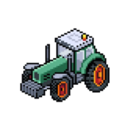
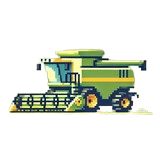

Fonctionnalités
Le matériel est l'ensemble des objets utilisables dans le jeu. Il y a deux types de matériel : les engins agricoles et les outils.
Le matériel est l'ensemble des objets utilisables dans le jeu. Il y a deux types de matériel : les engins agricoles et les outils.
Il y a deux types d'engins agricoles dans le jeu :
| Image | Engin | Utilisé |
|---|---|---|
|  | Tracteur | Permet de planer des graines et labourer plus rapidement. Utilisable uniquement par les employés. |
|  | Moissonneuse-batteuse | Permet de récolter les plantes plus rapidement. Utilisable uniquement par les employés. |
| Engin | Utilité |
|---|---|
| Faucille | Permet de récolter des plantes |
| Houe | Permet de labourer le sol et plantes les graines |
| Arroseur | Permet aux plantes de pousser plus rapidement et évite les sécheresses. |
| Engrais | Apporte des nutriments au sol qui sont essentiels à la pousse des plantes |
| Couveuse | Augmente la rapidité d'éclosion des œufs |
| Serre | Protège du froid et des intempéries |